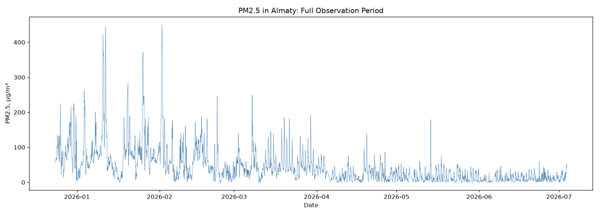
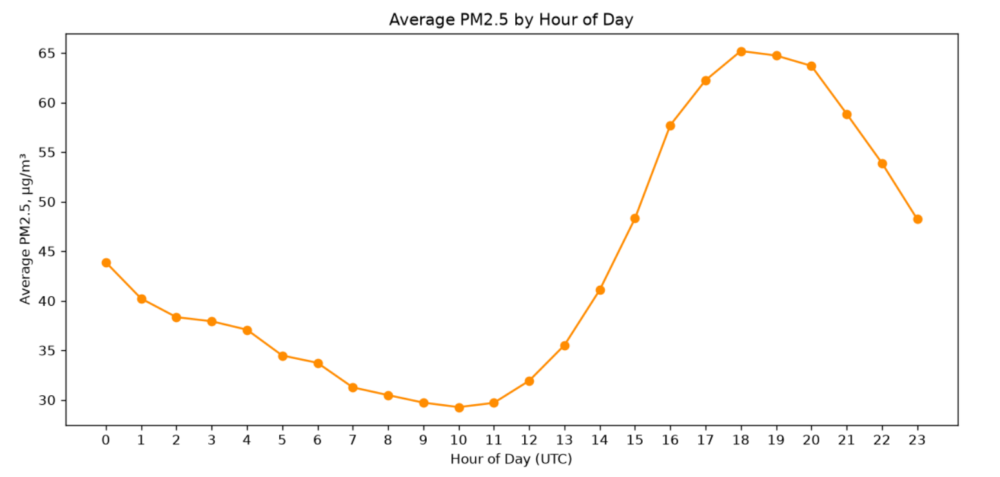
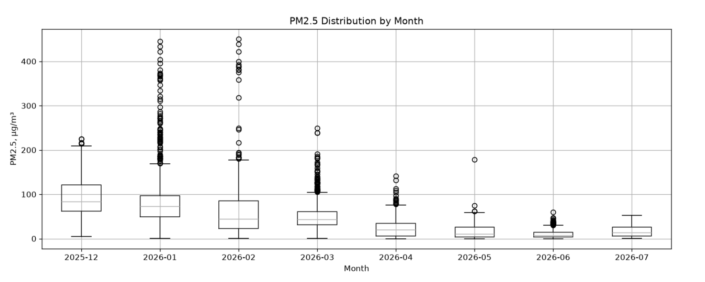
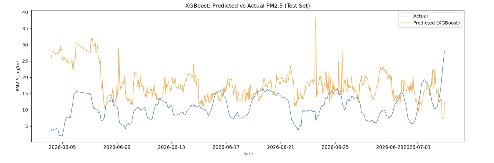
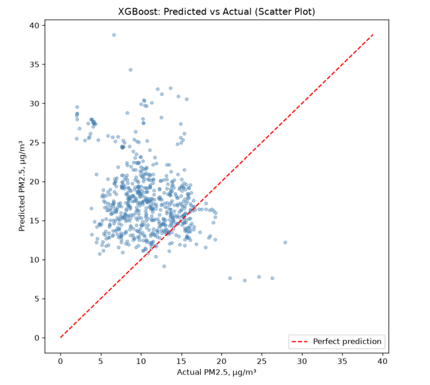

From Real-Time Monitoring to Prediction: Machine Learning for Next-Day PM2.5 Forecasting in Almaty
Abstract
This study tests whether machine learning can forecast PM2.5 air pollution in Almaty 24 hours in advance. Three baseline methods and three ML models (Ridge, Random Forest, XGBoost) were compared on seven months of hourly sensor data. The simple 24-hour moving average outperformed every ML model — a seasonal shift between winter training data and summer test data meant the more complex models systematically overestimated. The practical takeaway: model complexity does not guarantee better forecasts.
Research
Ecology
06.10.2026
English
Introduction
Air pollution is one of humanity’s most pressing problems. According to the World Health Organization (WHO)[4], 99 percent of people on Earth breathe air that exceeds recommended quality limits. The city of Almaty, located in the foothills, is a prime example. The peak period of pollution occurs in winter during the city’s heating season due to the characteristics of its terrain. While developing the Telegram bot, I noticed that it only displays the current conditions and cannot predict what tomorrow will bring. Because of this, users cannot protect themselves in advance from the harmful effects of smog. Existing air quality monitoring tools, including the Telegram bot developed for this study, primarily provide information on current PM2.5 levels but do not offer a simple forecast of future air quality. This creates a research gap in the availability of simple and understandable tools for short-term PM2.5 forecasting at the city level. Therefore, this study examines whether machine learning models can accurately forecast PM2.5 levels in Almaty 24 hours in advance. The research question is as follows: to what extent can machine learning models improve PM2.5 forecasting compared to simple baseline methods?
In the article by Joharestani et al.1 , the researchers studied PM2.5 forecasts in the Tehran metropolitan area (Iran). The study utilized the Random Forest and XGBoost methods, as well as a deep learning model. A total of 23 features were used, including satellite data, meteorological data, ground-based PM2.5 measurements, and geographic data. XGBoost yielded the best results: MAE = 9.93 µg/m³, RMSE = 13.58 µg/m³, R² = 0.81 (after removing irrelevant features).
The present study uses a simpler set of features, consisting only of lags, moving averages, and calendar data. Unlike the research in Tehran, my research was aimed at practical application, whereas the Iranian study focused on model accuracy. My study showed that complexity is not always beneficial, as no comparisons were made during the course of their research.
Researchers studied air quality in Mashhad (Iran)2 , the country’s second-largest city, and compared four machine learning models—LightGBM, Gradient Boosting, XGBoost, and Random Forest. The goal of their study was to predict PM2.5 levels in areas where there are no actual sensors by using data from real monitoring stations—essentially creating virtual monitoring stations. In contrast, in my work, the forecasting is time-based: I am attempting to predict what the PM2.5 level will be in Almaty in 24 hours at the same location where a sensor is already installed.
In a study of New Delhi (India)3 , the ELM-SO (Extreme Learning Machine + Snake Optimization) hybrid model was compared with six other models: SVR, Random Forest, standard ELM, Gradient Boosting Regressor, XGBoost, and LSTM. The results of the experiment showed that the ELM-SO hybrid performed best: MAE = 20.652 µg/m³, RMSE = 30.325 µg/m³. Unlike my study, theirs used a complex hybrid model with an optimization algorithm. In addition, my study included a direct comparison with simple baseline methods, which was absent from their study. In my work, LSTM was deliberately excluded due to the project's tight timeline, whereas it was included in their comparison. This study uses historical data from public monitoring stations accessible to all users (OpenAQ), as well as new data automatically collected via the IQAir API. Three simple baseline methods and three machine learning models are compared (Ridge, Random Forest, XGBoost). The study focuses on a limited time period of seven months using a single monitoring station.
Methods
This study uses two complementary data sources: a historical archive from OpenAQ, and an automated data collection pipeline built using the IQAir API. The archive covers the time period from December 23, 2025 to July 4, 2026, sourced from a station operated by Almaty Air Initiative using an AirGradient sensor, licensed under CC BY 4.0. This provided approximately 4,600 hours of PM2.5, PM0.3, temperature, and humidity readings, with 96 hours (2.1%) missing due to sensor gaps. Second, a data collection script was scheduled to run hourly using GitHub Actions, continuously extending the dataset throughout the research period.
Feature Engineering
The model predicts the future, however it does not possess its own memory. In order for the model to be able to work, previous values have to be given as separate columns. PM2.5 values for 1, 3, 6, 12, 24 ,48 hours have been used. The logic is simple: if an hour ago the quality was poor, consequently it is highly likely that it is going to be poor an hour later because air does not change momentarily.
Moving Averages, MA.
Separate values might be noisy due to sensor delay. Therefore instead of one figure "6 hours ago",the mean of the 6, 12, 24 and 48 hours was calculated because it is more stable than a single measurement and less sensitive to random fluctuations. An important technical nuance: when calculating the average, we deliberately excluded the current hour, including only the previous ones-otherwise, the model would effectively be "peeking" at the very value it was trying to predict during training. During exploratory data analysis (EDA), pronounced temporal dependencies in PM2.5 concentration were identified: daily cyclicality with an evening peak and seasonal variability due to the intensity of the heating season during the winter period. To account for these patterns, additional calendar features were included in the model architecture: hour of the day, day of the week, and month. The target variable is the average PM2.5 concentration over a 24‑hour interval, rather than a forecast for a specific point in time. This decision is driven by the desire to increase the model’s stability: the aggregated indicator helps minimize the impact of random fluctuations typical of point forecasts.
Data Splitting Strategy
The data cannot be shuffled randomly because it is a time series. If the data were shuffled, the model may start seeing data from the future during the training phase. In real-world forecasting, future data are not yet available when a prediction is made, so the model should not have access to them during training either. The data is divided exclusively in chronological order: the first 70% is for training, the next 15% is for validation, and the last 15% is for the testing process.
Baseline Models
Three baseline models are necessary to establish a reference point against which the effectiveness of more complex ML solutions is evaluated. They allow us to determine the quality of a prediction with minimal computational cost. If the performance metrics of an advanced model do not exceed those of the baseline, its implementation is not justified. In addition, using several baseline approaches helps conduct a comparative analysis of various forecasting methods at the initial stage. Persistence (inertia method): The most recent recorded value is used as the forecast. This simplest method serves as a baseline for assessing the complexity of the task; its MAE was 7.83. Moving Average (24-hour moving average): This method averages the data over the past 24 hours, which helps smooth out random outliers and short-term fluctuations. This approach proved to be the most effective among the baseline models (MAE 4.09). Seasonal Average: the forecast is based on the average value for a specific hour of the day, calculated from the training set. The method demonstrated low accuracy (MAE 45.69). Such a high value is due to a distributional shift: the model was trained on winter values but tested on summer values, which rendered the seasonal patterns irrelevant. Thus, the unsatisfactory result of the third method is explained not by its architectural shortcomings, but by a significant discrepancy between the distributions in the training and test sets.
Machine Learning Models
Ridge Regression is a linear model. It attempts to find a linear relationship between the features and PM2.5. Therefore, it is relatively simple and works well when the relationships between the features and the outcome are approximately linear. Random Forest uses a large number of decision trees and combines their predictions. This allows the model to account for nonlinear relationships and more complex interactions between features. XGBoost also uses trees, but builds them sequentially: each new tree attempts to correct the errors of the previous ones. As a result, it is capable of identifying more complex patterns. Ridge had an MAE of 8.04, Random Forest had 7.85, and XGBoost had 7.43. Thus, XGBoost turned out to be the best of the three ML models. However, notably, XGBoost still lost to Moving Average, which had an MAE of just 4.09. The reason is that a more complex model isn’t necessarily better if the training and test data differ significantly. In our case, the training set mainly contains winter data, while the test set contains summer data. The ML models were trained on patterns characteristic of the winter period, so it was difficult for them to generalize these patterns well to summer conditions. The Moving Average performed better because it simply uses the last 24 hours, meaning it is much less dependent on which seasonal conditions prevailed in the training dataset. The results show that model complexity alone does not guarantee superior performance. The quality of a forecast depends heavily on how representative the training data is of the period the model is supposed to predict.
Evaluation Metrics
Two evaluation metrics, Mean Absolute Error (MAE) and Root Mean Squared Error (RMSE), were used to assess model performance. MAE measures the average absolute difference between predicted and actual PM2.5 values and is expressed in the same units (µg/m³), making it easy to interpret. RMSE gives greater weight to larger errors because the errors are squared before averaging. Using both metrics provides a more complete evaluation: MAE represents the typical prediction error, while RMSE indicates whether the model produces occasional large prediction errors.
Results
Table 1 | Comparison of MAE across baseline and machine learning models. Results shown for the test set.
| Model | MAE |
|---|---|
| Persistence (baseline) | 7.83 |
| Moving Average (baseline) | 4.09 |
| Seasonal Average (baseline) | 45.69 |
| Ridge Regression | 8.04 |
| Random Forest | 7.85 |
| XGBoost | 7.43 |
Table 1 reports the Mean Absolute Error (MAE) values for the baseline and machine learning models on the test set, where the Moving Average baseline achieved the best (lowest) result.

Figure 1 | PM2.5 concentration in Almaty over the full observation period (December 2025 – July 2026).
Figure 1 presents the PM2.5 concentration in Almaty over the entire observation period, with peak values reaching approximately 450 µg/m³ predominantly during the winter months.

Figure 2 | Average PM2. 5 concentration by hour of day, showing a pronounced evening peak.
The diurnal fluctuations shown in Figure 2 exhibit a pronounced evening peak between 18:00 and 20:00 UTC.

Figure 3 | Distribution of PM2.5 by month, illustrating strong seasonal variation.
The seasonal dynamics reflected in Figure 3 indicate a gradual and consistent decline in median PM2.5 levels from December to July.

Figure 4 | XGBoost predicted vs actual PM2.5 values over the test period.

Figure 5 | Scatter plot of XGBoost predicted vs actual PM2.5 values, with the diagonal line representing perfect prediction.
Finally, the time series for the test period (Figure 4) and the scatter plot (Figure 5) clearly demonstrate that the XGBoost model systematically overestimates predicted values compared to the actual measured values throughout the entire test interval.
Discussion
The main conclusion is that the models were largely based on patterns characteristic of the winter season but were unable to adapt to the significantly different summer conditions. In particular, the large diurnal variation in PM2.5 levels, which is characteristic of winter data, did not translate well to the summer period, which features lower concentrations and a smaller diurnal range. This led to a systematic overestimation of forecasts, as clearly shown in Figures 4 and 5.
The main problem is the short data period. We only have about 7 months of data, so we don’t observe a full annual cycle. As a result, training took place mainly during the winter, while testing occurred during the summer. This created a strong seasonal shift. It’s important to emphasize that this is a limitation of the available data, not a flaw in the chosen partitioning method.
The second problem is that we have only one monitoring station. Even if the model predicts PM2.5 well at this location, this does not prove that it will perform equally well in different areas of Almaty, where pollution sources and conditions may vary.
Additionally, the model did not incorporate future weather conditions that could help predict changes in PM2.5 levels. It relied solely on available past and current data.
The results of the study show that a more complex ML model is not always the best solution. Although the ML models did not outperform the Moving Average, the Moving Average itself proved to be a sufficiently accurate and simple method that can be used in a real-world application, such as a Telegram bot. Therefore, for the current version of the bot, it makes more sense to use the Moving Average, while using the results of the experiment with ML models as a basis for further improving the project.
In the future, we can try training models on a longer dataset, incorporating weather forecasts, and testing whether more complex models can then outperform the baseline.
Conclusion
The study compared three ML models with the aim of improving the 24-hour PM2.5 forecast. Based on the data, it was found that, under current conditions, the moving average proved to be the most accurate option; therefore, it makes sense to use it in the bot right now. However, a longer time period will allow for the collection of more data, which will aid in the continued development of the other models, especially when data from other stations is incorporated. This may reveal a potential advantage in forecasting in the future
Acknowledgments
While preparing this paper, I used the Claude tool (Anthropic) to assist with writing Python scripts for data collection, analysis, and model training; explaining methodology and technical concepts; checking the grammar and spelling of the English text; and helping me find scientific literature. Artificial intelligence was not used to write, paraphrase, or rewrite the text of this article; I wrote the entire text myself.
References
- M. Zamani Joharestani, C. Cao, X. Ni, B. Bashir, S. Talebiesfandarani. PM2. 5 prediction based on random forest, XGBoost, and deep learning using multisource remote sensing data. Atmosphere. Vol. 10, pg. 373, 2019, https://doi.org/10.3390/atmos10070373.
- A. Makhdoomi, M. Sarkhosh, S. Ziaei. PM2.5 concentration prediction using machine learning algorithms: an approach to virtual monitoring stations. Scientific Reports. Vol. 15, pg. 8076, 2025, https://doi.org/10.1038/s41598-025-92019-3.
- A. Masood, M. M. Hameed, A. Srivastava, Q. B. Pham, K. Ahmad, S. F. M. Razali, S. A. Baowidan. Improving PM2.5 prediction in New Delhi using a hybrid extreme learning machine coupled with snake optimization algorithm. Scientific Reports. Vol. 13, pg. 21057, 2023, https://doi.org/10.1038/s41598-023-47492-z.
- World Health Organization. Billions of people still breathe unhealthy air: new WHO data. https://www.who.int/news/item/04-04-2022-billions-of-people-still-breathe-unhealthy-air-new-who-data, 2022.
4 World Health Organization, "Billions of people still breathe unhealthy air: new WHO data," WHO, 2022. [Online]. Available: https://www.who.int/news/item/04-04-2022-billions-of-people-still-breathe-unhealthy-air-new-who-data